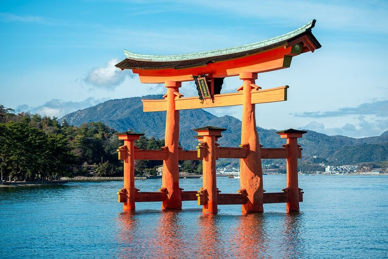
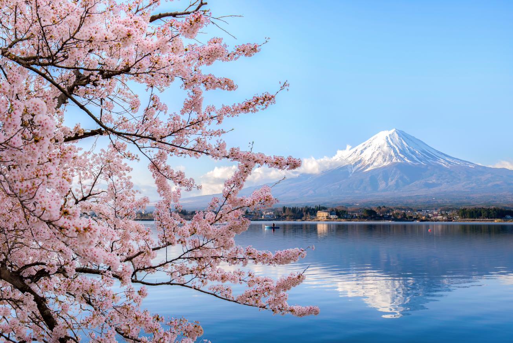
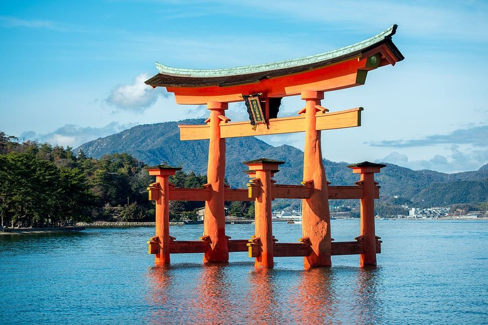
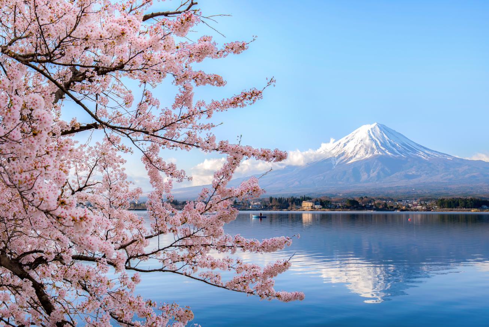
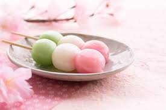
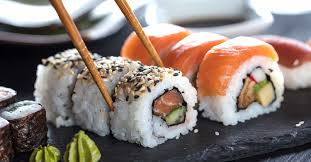
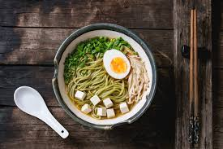
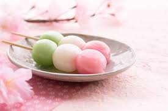
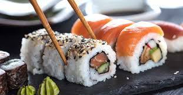
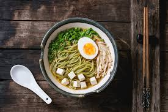

Japan
 



Unforgettable Experiences in Japan!
Japan is more than just a travel destination; it’s an unforgettable experience! Many travelers have shared their stories of exploring Tokyo’s vibrant streets, visiting Kyoto’s traditional villages, and walking under the breathtaking cherry blossoms. Some describe standing before Mount Fuji as a magical moment, while others find riding the Shinkansen bullet train a thrilling adventure. From dazzling city lights to charming local markets, every visitor discovers their own unique story in Japan!
Japanese Food
 





The Unique Flavors of Japanese Cuisine
Japanese cuisine is famous for its delicate flavors, fresh ingredients, and artistic presentation. From sushi and ramen to tempura and takoyaki, every dish offers a taste of Japan’s rich culture and traditions. Whether you’re enjoying a bowl of warm miso soup or savoring a piece of sushi, Japanese food is an experience in itself!
| Dish | Description |
|---|---|
| Sushi | Vinegared rice with fresh seafood, often served with wasabi and soy sauce. |
| Ramen | A Japanese noodle soup with rich broth, often topped with pork, eggs, and green onions. |
| Takoyaki | Ball-shaped snacks filled with octopus, topped with sauce and bonito flakes. |
| Tempura | Lightly battered and deep-fried seafood or vegetables. |